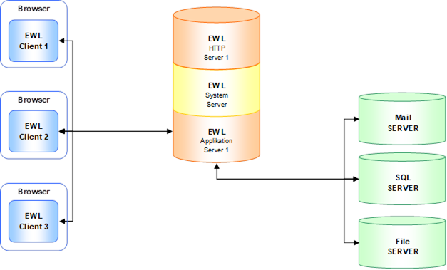
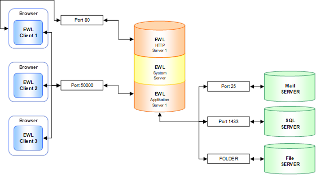
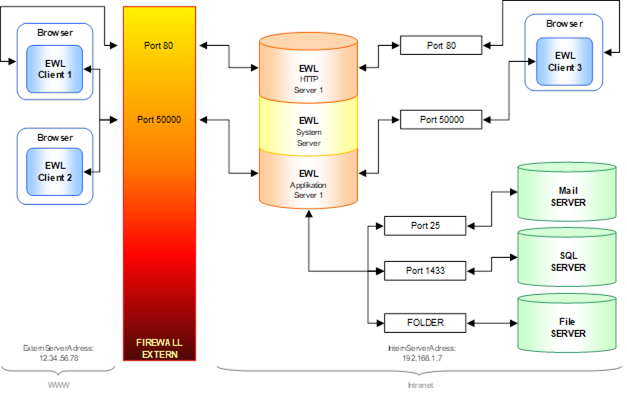
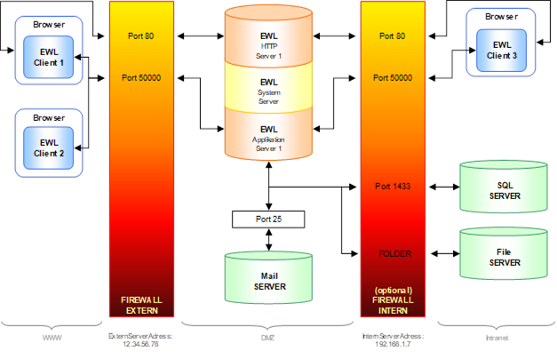
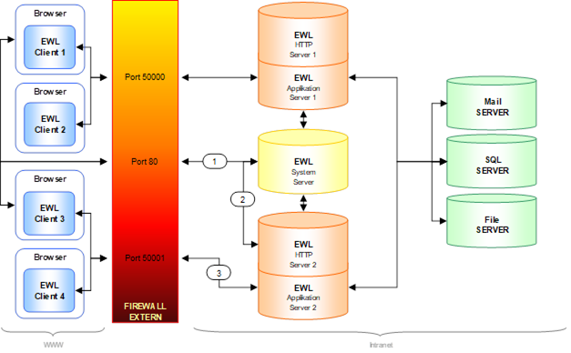

Prinzipieller Aufbau

EWL und Ports grundsätzlich

Interne und Externe IP / Firewall

Interne und Externe IP mit DMZ (Demilitarized Zone)
Die in der DMZ aufgestellten Bereiche werden durch eine oder mehrere Firewalls gegen andere Netze (z. B. Internet, LAN) abgeschirmt. Durch diese Trennung kann der Zugriff auf öffentlich erreichbare Dienste gestattet und gleichzeitig das interne Netz (LAN) vor unberechtigten Zugriffen geschützt werden. Der Sinn besteht darin, auf möglichst sicherer Basis Dienste des Rechnerverbundes sowohl dem WAN (Internet) als auch dem LAN (Intranet) zur Verfügung zu stellen.

Lastverteilung über EWL System Server
ü Auf einem Computer (worldwide) läuft der Systemserver (mesosysserver.exe)
ü Jeder Applikationsserver (mesoserver.exe) muss in seiner "server.config" den Systemserver konfiguriert haben und registriert sich bei diesem
ü Jeder Benutzer meldet sich am Systemserver an (über einen http-Browser)
ü Der Systemserver wählt - je nach Anzahl der bereits angemeldeten User - einen der angemeldeten Applikationsserver aus und leitet die HTTP Anfrage des Clients auf diesen Server um
